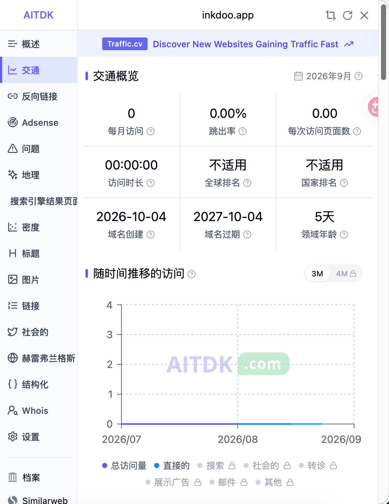
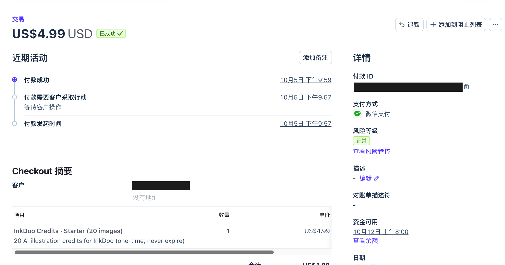
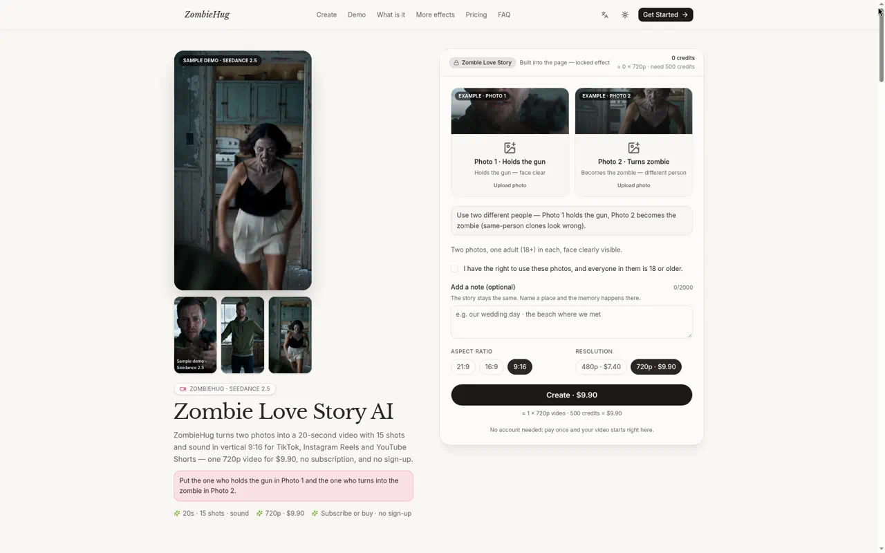
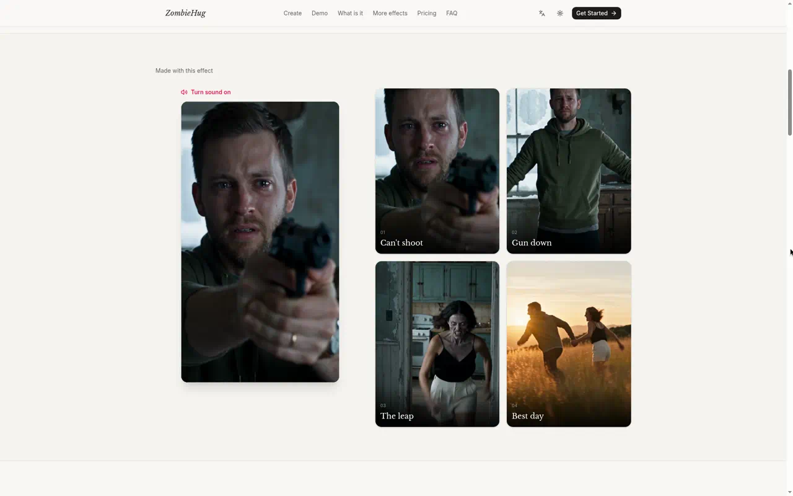
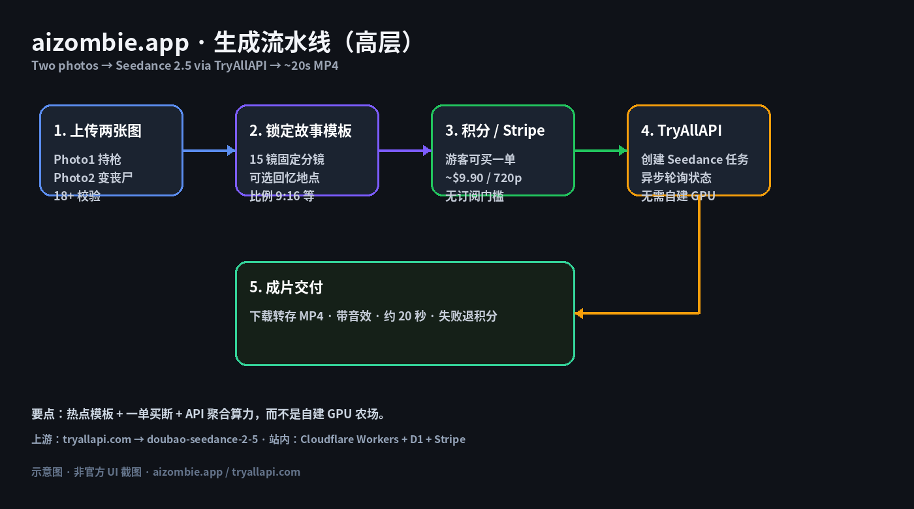
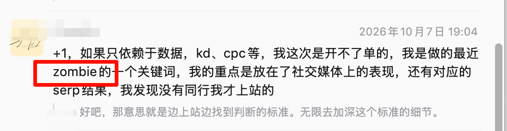
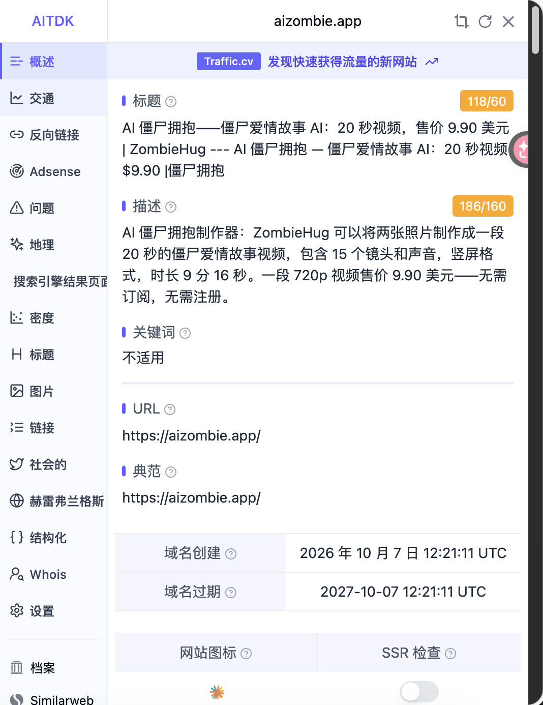
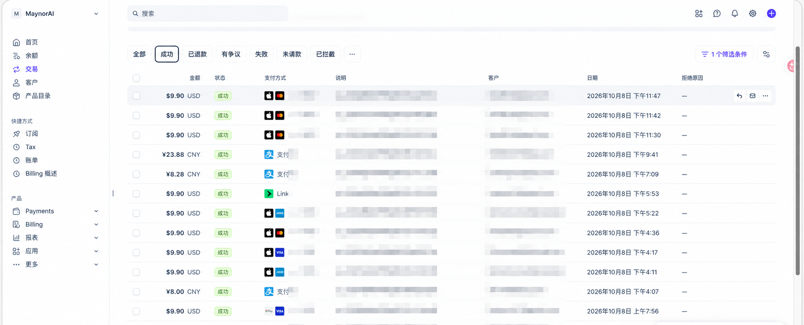

靠一个新词站冲日入百刀：从发现到搭建复盘
作者：Maynor / Jody Jackson（独立开发）
悬赏周期：2026-09-28～2026-10-08｜新词新站｜文内附截图证明
说明：正文不写站点明文 URL；客户信息已打码。
1. 介绍你自己和上站经历和以前的战绩
我是 Maynor / Jody Jackson，自己搞站的。平时就拿手里那套 shipany-tanstack（TanStack Start）+ Cloudflare Workers / D1 出活，收款走 Stripe，出片走 Seedance（经视频 API 聚合）。
国庆这窗口，我其实连打了两站：
- InkDoo（AI 插画积分站）：域名 2026-10-04 注册；2026-10-05 21:57–21:59 CST 窗口里第一笔成功单就落这儿了——US$4.99，Starter 20 images，微信支付。
- zombie 新词站（这篇主角）：域名 2026-10-07 注册；2026-10-08 一堆 $9.90 单砸下来，冲「日入百刀」那个量级。本站确认成功单 一共 10 单。

图：InkDoo 域名创建 2026-10-04（悬赏窗口内）。

图：Stripe——10 月 5 日 21:57 发起 / 21:59 成功，US$4.99，微信支付；客户和支付 ID 已打码。
zombie 站长什么样？两张照片丢进去，大概 20 秒，竖屏「僵尸拥抱 / 丧尸拥抱」成片出来。游客能直接付一单（Single 大概 $9.90），不用先订订阅。

图：首页左边样片，右边 Photo 1 / Photo 2，还有 Create · $9.90。

图：站内「Made with this effect」分镜示意（自己生成的样片）。
整条链路就一句话：两图上传 → 固定故事模板拼提示词 → 看积分够不够，不够就跳 Stripe → Worker 调视频 API 开 Seedance 任务 → 轮询出片，失败就把积分退回去。

图：高层流水线示意。核心就仨字儿：模板、一单买断、API 算力。
2. 这次什么时候、因什么契机决定上站
契机不是我对着关键词表算出来的，是 哥飞社群里刷到 zombie 相关讨论。
截图是 2026-10-07 的。有人复盘说：要是只盯 KD、CPC，这波单大概率开不出来；他自己更看重社交媒体热不热，再对一下 SERP，发现几乎没人做，才决定上。我看完就想试——词缝很清楚，缺的是「步骤少、能付一单就走」的壳子，正好叠我现成的 Workers + Stripe + Seedance。

图：哥飞社群里聊 zombie 关键词和上站判断。
决定很快：当天查域名、注册完，把模板站改成「僵尸拥抱」产品形态就上了。
3. 完整经历：域名、上线、流量与首单
zombie 站域名
- 域名创建（AITDK）：2026-10-07 12:21:11 UTC（上海时间：2026-10-07 20:21:11 CST）
- 落在悬赏窗口 2026-09-28～2026-10-08 里。

图：AITDK「域名创建」字段。正文不另写站点 URL。
时间线（有截图的节点）
| 节点 | 事实 |
|---|---|
| 窗口内第一站域名 | InkDoo · 2026-10-04 |
| 窗口内第一笔订单 | 2026-10-05 21:59 CST · US$4.99 · InkDoo Starter |
| zombie 站域名 | 2026-10-07 20:21:11 CST |
| zombie 站出单高峰 | 2026-10-08：本站确认 10 单；Stripe 列表里 $9.90 很密 |
串一下：
- 10-04：InkDoo 域名落地。
- 10-05：窗口第一单落在 InkDoo（$4.99）。
- 10-07：哥飞群看到 zombie → 注册域名并上线。
- 10-08：zombie 这边冲出「日入百刀」量级（本站 10 单）。
视频上游我这边走聚合 API（注册入口：tryallapi.com），站内调 Seedance；密钥只放 Workers Secret，本文不贴 Key。
4. 数据回顾
订单证明（Stripe，2026-10-08）
下面是 Stripe「交易 → 成功」截图（账号展示名 MaynorAI；说明 / 客户列已打码）。

图：2026-10-08 Successful 列表（滚动视窗）。
本站（新词 + 新站）确认：总共 10 单。
这张图主要用来证明：出单那天 $9.90 很密，支付方式里能看到 Apple Pay、支付宝、Link、卡之类。视窗里同日可能还混着非本站流水，别拿视窗笔数直接当本站总数——本站口径就按 10 单。
按 Single 大概 $9.90 × 10 粗算，出单日营收落在「日入百刀」那个量级（还没扣 Stripe 手续费和视频上游成本，净利这儿不展开）。
付款地区
已知相关地区：美国、乌克兰、意大利、瑞士。
5. 收获
- 新词不一定要先算 KD。 哥飞群里那条 zombie 讨论，直接把「有没有同行、社交侧热不热」变成动手信号。
- 模板站 + 固定故事模板，比让用户自己写一长串分镜快多了；$9.90 门槛低，适合热点脉冲。
- Workers + D1 + Stripe + 视频 API → Seedance，能在很短窗口里从「看到词」走到成片式出单。
- 留证习惯：域名创建截图 + Stripe 成功列表（客户打码），悬赏核对省事。
6. 感悟
热点新词窗口真的短。这次是 10-07 看到讨论并注册域名，10-08 就冲出本站 10 单——再拖一天，SERP 和社交热度可能就不一样了。
技术上更土一点：能收钱的站，关键不是模型名片，而是 积分先扣、失败退回、Webhook 别串域名、上游撑不住时失败得体面。对外复盘就写能证明的：域名时间、首单时间、本站单量、地区——截图说多少，就写多少。
7. 对未参与群友的鼓励
要是你也在哥飞群里刷到新词，还在纠结「KD 好不好看」，不妨先问自己三句：
社交侧是不是突然在播？SERP 有没有空位？自己有没有现成能收钱的壳？
两条以上是「是」，就值得像这次 zombie 站一样——先注册、先上最小可付费版，再用截图说话。
国庆这波窗口已经过去了；下一波新词不会等表格算完。一起继续上站。
（完）